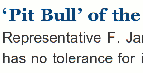

The paper rediscovers curved quotes

I shared in your despair when, following its April redesign, the Times still had straight ASCII quotes. I’m sure your eyes, like mine, paused with disapproval over every quoted passage, every possessive, every plural “DVD’s.”
Now we can finally relax. (About the curvature—not the apostorrhea of “DVD’s.”) Yesterday, curved punctuation began to grace the Times’s articles, and today it’s shouting out from the front page.
Thank you. You don’t know how much this means to me, unreasonably.
Since the Times has finally caught up with Web technology, it’s time for typographically sloven browser developers to raise the bar again. We need Firefox support for soft hyphens, and CSS support for stomping out widows.
Nobody thinks they care about Web typography—yet everyone still prefers to read the paper.
Add a comment